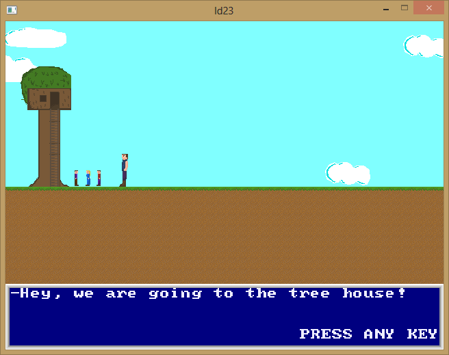

| Title | LD23 giant boy game |
| Date | 2017-01-29 03:55 |
| Category | Games |
| Language | C++ |
| Libraries | Allegro 4 |
| State | Finished |
| Started | April 20 2012 |
My unsubmitted entry to the 23th Ludum Dare competition. It wasn't finished in time to enter either the competition or the jam, but soon after.